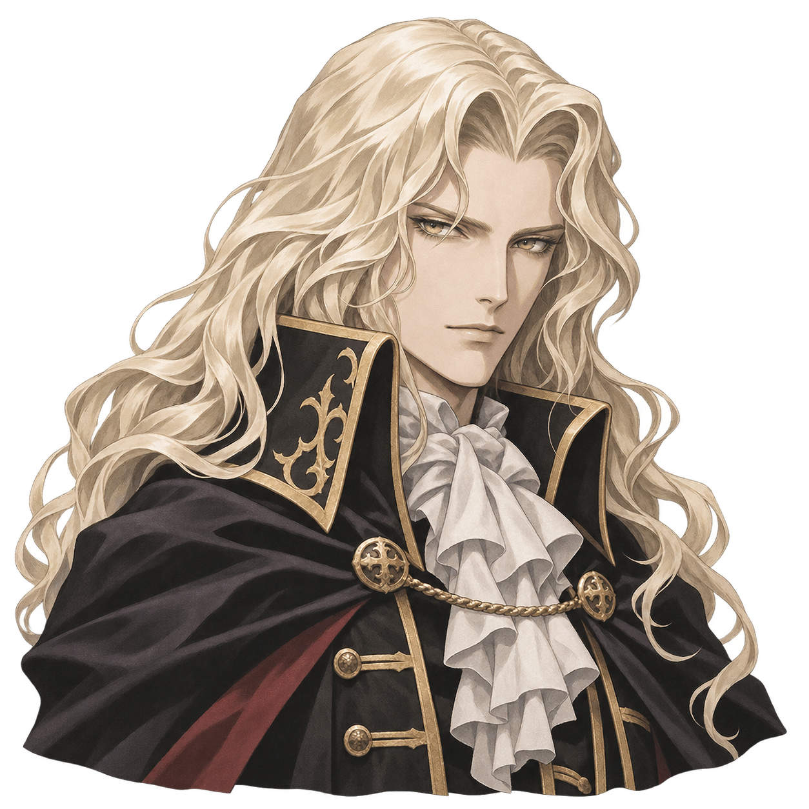

01 / PLAYSTATION 1
Symphony of the Night
Alucard retorna ao castelo de seu pai para investigar o desaparecimento de Richter Belmont. Explore seus corredores, encontre equipamentos e descubra novas habilidades para alcançar áreas antes inacessíveis.
PROTAGONISTA Alucard
Download